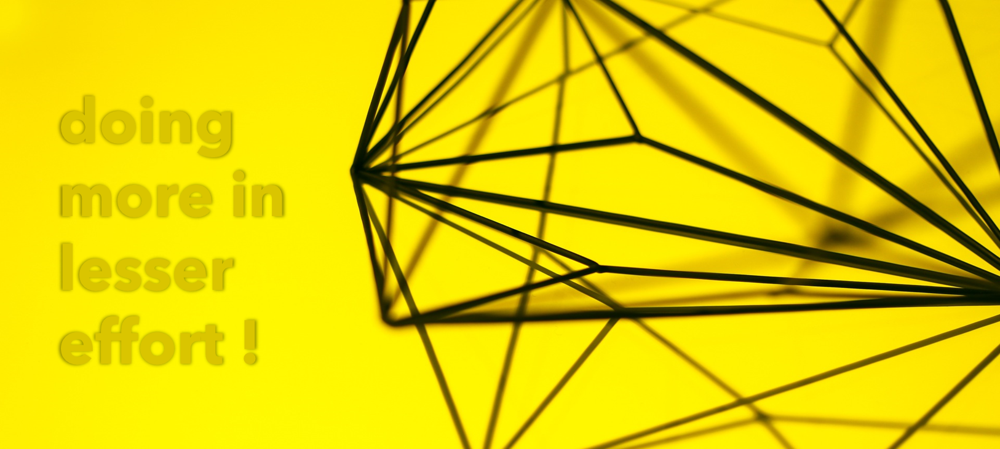
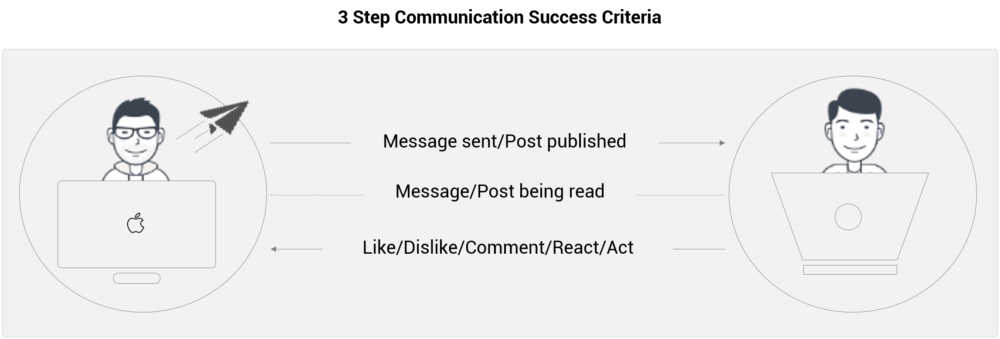

Do More In Less
Why do we communicate? We communicate to express- be it our needs, concerns, emotions or even a simple message. The purpose of communication is to express something. In internet era our peripheries has grown from our families, friend circles and neighborhood to global level across nations. We started using internet to express via different channels, mediums and tools. We started communicating across the globe in no time.
Social media, blogs, articles are just few of the numerous ways to communicate or express online. With the advent of new tools and enhancements, we started to communicate successfully. So, what do we mean by a successful communication? Every successful communication cycle comprises of three steps – first, sender sends/broadcast a message, receivers receives it and the lastly the receiver responds back through different actions completing the cycle.
Lets take an example with all three steps involved in a communication process-
- Posting the article online to communicate.
- Reading the article
- Responding with like/dislike/comment/react/act on this.
3 Step Communication Success Criteria
Generally, the communication process ends with second step when you finished reading this. However, as we discussed, the purpose of the communication, nothing but to express, doesn’t get confirmed to be fulfilled unless the acknowledgement is received back. This way of acknowledgement has evolved through times.
The acknowledgements started in the form of comments to a web content. However, writing a comment is a tedious task and needs a lot of conscious attention. Hence, comments sections were limited and less popular. This made the cycle of communication incomplete and feeble.
This was followed by a revolutionary era of visual interactive icons such as star, heart or thumbs-up icons. These icons transformed the way we acknowledge or respond to any content. We just tap on these icons and express back our opinions on the content.
Later as the engagement with the internet grew, we added one more thing to our responses other than the acknowledgement, that is our emotions and perspective on the subject. Apart from just the acknowledgement, we started to convey our feelings on the subject.
***